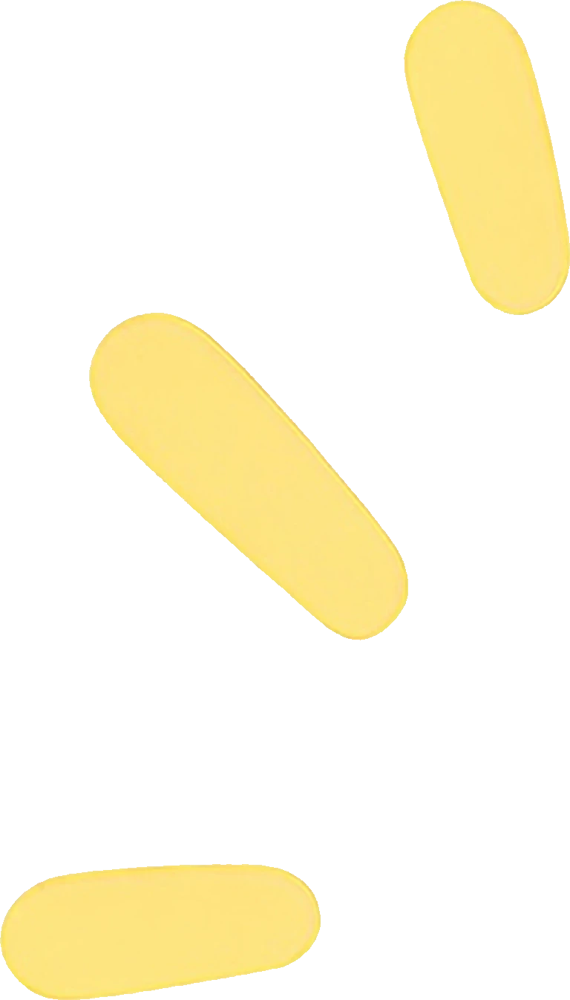
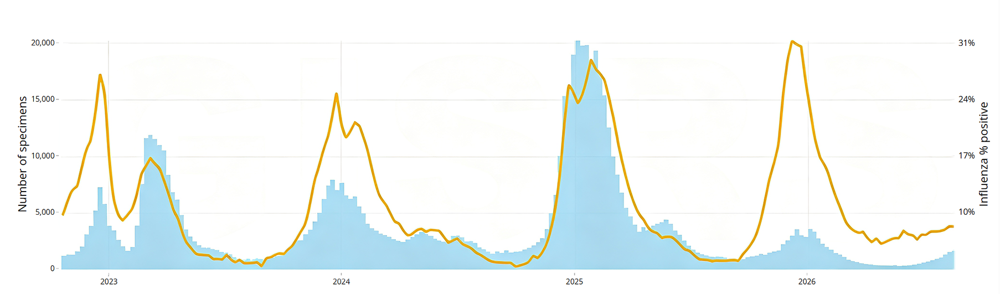
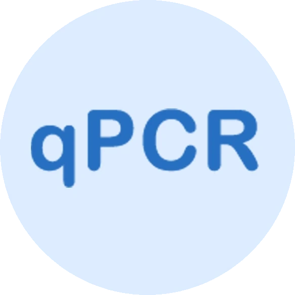
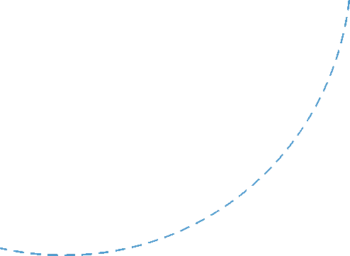
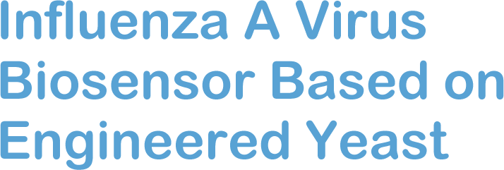
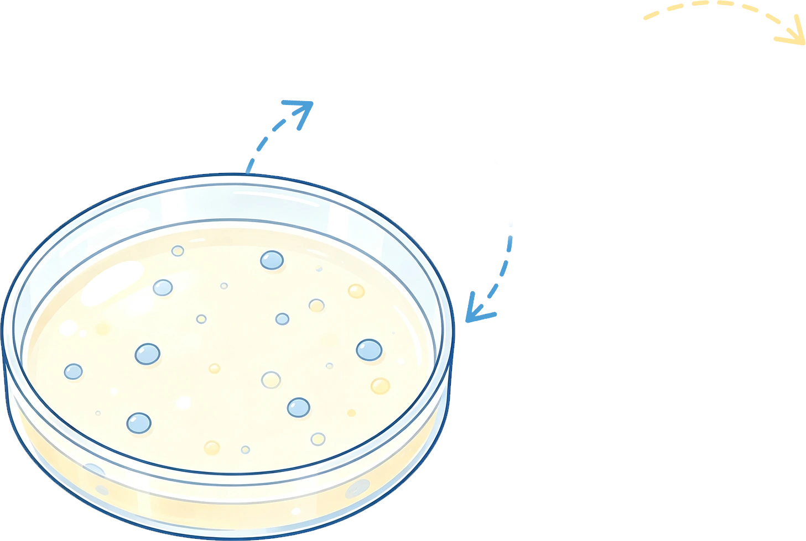
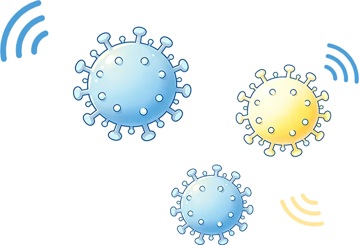
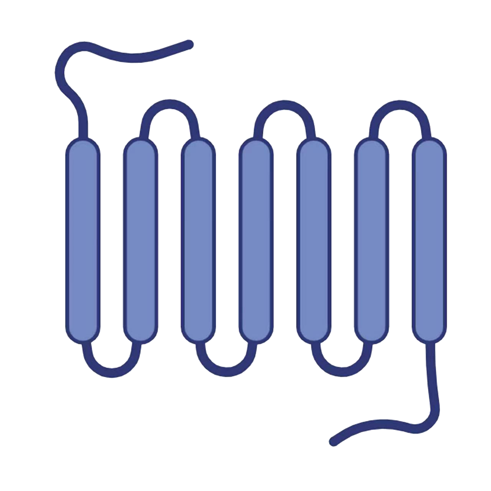
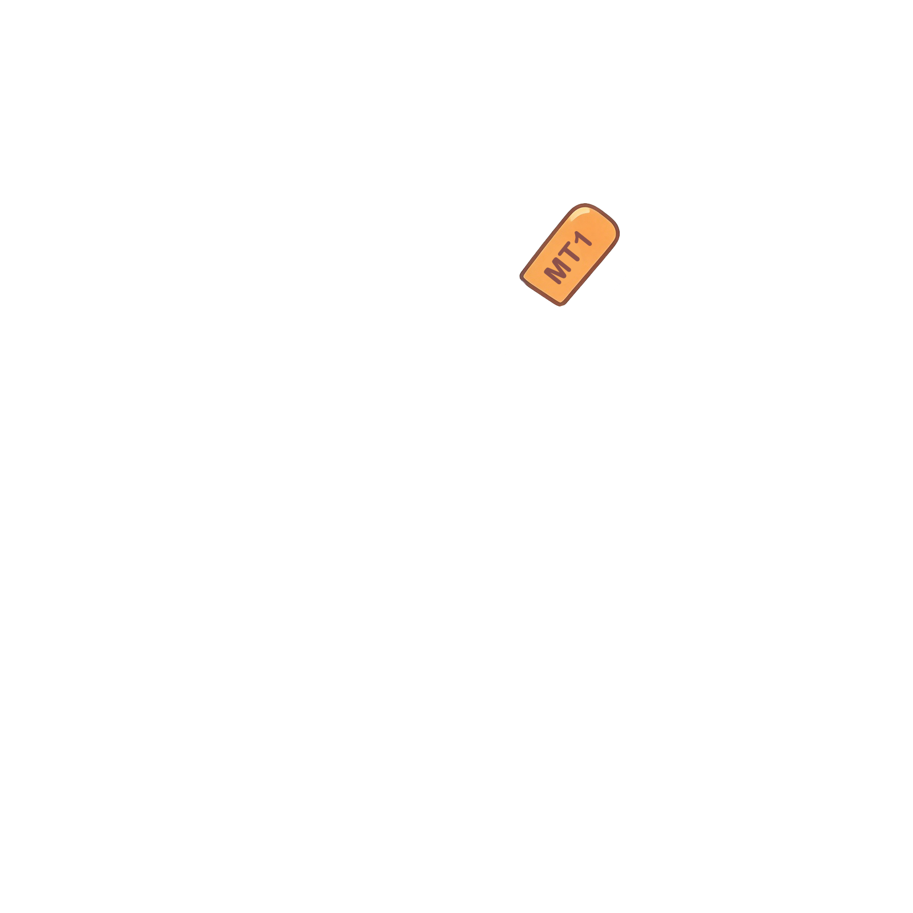

Loading…
ECHO Yeast — an engineered Saccharomyces cerevisiae biosensor for influenza A (H1N1) virus

About 1 in 12 people worldwide is infected by influenza A every year
Influenza A · every year
1 in 12 people worldwide are infected by influenza A every year
Every year
660,000,000
people catch influenza A
≈ 21 every second
Approximately 21 people are infected with influenza A every second — about 660 million each year, based on WHO estimates.
Share of the world population
- 20238.19%
- 20248.11%
- 20258.03%
Estimate: WHO ~1 billion seasonal influenza cases each year × influenza A share of positives (66%, WHO South-East Asia Region, 2025) ÷ UN world population for that year; that is also ≈ 21 new infections every second. Sources: WHO Influenza (seasonal) fact sheet, 28 Feb 2025; WHO Seasonal influenza – Global situation, 10 Dec 2025; UN World Population Prospects via World Bank.
Virus detections by subtype reported to FluNet, 21 October 2022 to 21 August 2026

Data source: WHO FluNet, Global Influenza Programme
Influenza subtypes
A(H1N1)pdm09
Influenza percent positive
From passive detection to active monitoring
Why active detection
Every existing test waits for you to feel sick
Passive detection begins only after symptoms appear — a clinic visit, a swab, laboratory confirmation. We are not trying to outperform these methods; we want to change where detection begins: from waiting rooms to the air we share.
Detection methods: qPCR / ELISA / CGIS
Contemporary popular methods for detecting H1N1 influenza


qPCR Nucleic acid test
＋ Highest sensitivity & accuracy, quantitative — the reference standard
－ Needs lab equipment & trained staff, ~1–2 h
ELISA Antigen / protein test
＋ High throughput & lower cost, good for batch screening
－ Less sensitive than qPCR, needs a reader & more time
CGIS Colloidal gold strip
＋ On-site result in 10–15 min, portable, no instruments
－ Limited sensitivity & result uncertainty, needs confirmatory testing
Influenza A Virus Biosensor Based on Engineered Yeast

Can We Build a Living Sensor That Directly Responds to Viral Signals?


WHY EHCO Yeast?
Research content: Workflow and principle
How PAGER antigen-gated receptors work
Nanobodies (Nb) specifically recognize and bind influenza HA antigen; through steric hindrance and conformational changes, they push the autoinhibitory peptide MT1 away from the receptor’s orthosteric binding site. Once the binding site is exposed, the small-molecule agonist DCZ can bind and activate the receptor. The activated receptor transmits signals downstream via the G protein-coupled pathway, ultimately initiating reporter gene expression driven by the FUS1 promoter.


How the PAGER receptor is designed to work. The yeast cell membrane is designed to carry an hM1Dq receptor whose extracellular recognition unit is an anti-H1N1 HA nanobody (Nb), while the MT1 inhibitor is designed to keep hM1Dq blocked whenever no antigen is present. When an influenza A (H1N1) HA antigen binds the nanobody, the inhibitor is designed to be displaced from the receptor; with DCZ holding hM1Dq ready, the receptor is designed to hand the signal to the humanised Gα protein (the Saccharomyces cerevisiae Gpa1 C-terminus, last five residues changed from KIGII to EYNLV) and then to the yeast MAPK cascade, where the FUS1 promoter drives the yEGFP or lacZ reporter. All of this is the intended design; no detection performance is claimed here.
Future Vision: From Modular Research to Shared Public Health Value
From Modular Research to Shared Public Health Value
EchoYeast’s contribution goes beyond the pursuit of a single biosensor. By sharing characterized reporter parts, yeast-engineering evidence, computational hypotheses, and the lessons from designs that did not yet work, we aim to give future teams a clearer starting point. Our long-term vision is to explore how modular living-cell sensing could support environmental monitoring—through open research, careful validation, and responsible design.
Our contribution today is a documented foundation for further research.
Our vision for tomorrow is more accessible, evidence-based environmental monitoring.
-
Reusable Knowledge for Future Teams
We contribute FUS1-based reporter parts, yeast-editing components, and documentation of Gpa1 C-terminal engineering. Together with construction records and characterization results, these resources provide starting points for future yeast-biosensor projects. Clearly distinguishing demonstrated results from unresolved questions helps others assess what can be reused and what still requires validation.
-
A Future Role in Environmental Monitoring
Our long-term goal is to explore whether yeast-based sensing could complement existing approaches to monitoring influenza-related environmental signals. Such a system would not replace clinical testing or determine whether an individual is infected. Any future application would require evidence of specificity, sensitivity, reliability, and performance in relevant sample conditions.
-
Accessibility as a Design Goal
Our temperature-controlled optical-readout prototype allows us to explore how biological sensing might be paired with accessible instrumentation. Affordability, ease of operation, maintenance, and local resource needs remain design priorities rather than demonstrated advantages. Their practical value must be assessed alongside biological performance.
-
Open Development, Responsible Progress
We aim to share not only successful modules, but also limitations—including unresolved full-length receptor expression and HA-dependent activation. Future work must address biological containment, sample handling, and the interpretation of results. By making both progress and uncertainty visible, EchoYeast seeks to support more transparent and responsible biosensor development.